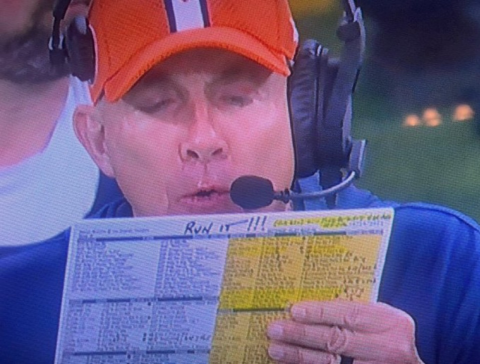

Broncos vs SeahawksHOME GAME · Empower Field at Mile High
RUN IT!

No official game statuses yet (as of Wednesday). Tuesday's estimated report: Pat Surtain II (CB, ankle) and Talanoa Hufanga (S, ankle) did not practice for a second day; Riley Moss (CB, ribs) was limited. ESPN projects Surtain DOUBTFUL and Hufanga OUT; under the house rule doubtful means out, so this page plans for both missing.
Next up: Jahdae Barron and Kris Abrams-Draine at corner, Devon Key at strong safety, Ja'Quan McMillian in the slot. They draw Jaxon Smith-Njigba (37 catches, 583 yards, 7 TD), limited Tuesday with an ankle injury but no longer on ESPN's injury list.
Seattle's linebackers: ESPN lists Drake Thomas and Chazz Surratt OUT (updated about 3 PM PT Wednesday); Tyrice Knight starts next to Ernest Jones IV.
Sources: denverbroncos.com injury report (Tue Oct 13, estimated); seahawks.com Week 6 injury report; ESPN game summary injuries, fetched Oct 14. The Broncos said statuses would come Wednesday; re-check before kickoff.
Player matchups ESPN team leaders, depth charts and injury report, pulled Oct 14
Smith-Njigba vs. a Denver secondary on the injury report
Edge: Seahawks Broncos
Broncos Pat Surtain II DOUBTFUL = OUT · S
Pat Surtain II DOUBTFUL = OUT · S  Talanoa Hufanga OUT · stepping in: CB
Talanoa Hufanga OUT · stepping in: CB  Jahdae Barron, S
Jahdae Barron, S  Devon Key · CB
Devon Key · CB  Riley Moss questionable (ribs), next
Riley Moss questionable (ribs), next  Kris Abrams-Draine
Kris Abrams-Draine Seahawks
Seahawks Jaxon Smith-Njigba — 37 rec, 583 yds, 7 TD (limited Tue, ankle)
Jaxon Smith-Njigba — 37 rec, 583 yds, 7 TD (limited Tue, ankle)This is the matchup of the game. Smith-Njigba has 583 of Seattle's receiving yards and 7 of its touchdown catches; no other Seahawk has more than 129 yards. ESPN no longer lists him on the injury report. Denver plays him without its top corner and its strong safety: Barron moves outside and Key takes Hufanga's spot, with Moss questionable on the other side.
Quarterback vs. secondary: Nix vs. Seattle's ball hawks
Edge: SeahawksBroncos Bo Nix — 97/162, 942 yds, 6 TD, 3 INT, 80.8 ratingSeahawks
Bo Nix — 97/162, 942 yds, 6 TD, 3 INT, 80.8 ratingSeahawks Julian Love 2 INT · CB
Julian Love 2 INT · CB  Nehemiah Pritchett 2 INT · CB
Nehemiah Pritchett 2 INT · CB  Devon Witherspoon 32 tackles · NB
Devon Witherspoon 32 tackles · NB  Nick Emmanwori
Nick EmmanworiSeattle has 7 interceptions and 11 takeaways in five games, Denver 5 and 7. Nix has protected the ball (3 interceptions, 14th-lowest rate among the 32 starters) but gains only 5.8 yards an attempt, 29th. Seattle's secondary is built to live with short throws and wait for a mistake.
Darnold vs. Denver's safeties
Edge: SeahawksBroncos Brandon Jones 2 INT, 35 tackles · S Devon Key (starts for Hufanga, OUT) · NB
Brandon Jones 2 INT, 35 tackles · S Devon Key (starts for Hufanga, OUT) · NB  Ja'Quan McMillianSeahawks
Ja'Quan McMillianSeahawks Sam Darnold — 63/98, 755 yds, 7 TD, 5 INT, 90.3 rating (4 games) · backup
Sam Darnold — 63/98, 755 yds, 7 TD, 5 INT, 90.3 rating (4 games) · backup  Drew Lock limited (right forearm)
Drew Lock limited (right forearm)Darnold throws an interception every 19.6 attempts, but Denver's ball-hawking is thinner now: Jones and Hufanga have four of the team's five picks, and Hufanga is out. Key starts in his place. The edge tilts to Seattle because the safety who made half of Denver's interceptions is not on the field.
Denver's pass rush vs. Seattle's protection
Edge: BroncosBroncos Zach Allen 4 sacks · OLB
Zach Allen 4 sacks · OLB  Nik Bonitto 3 sacks · OLB
Nik Bonitto 3 sacks · OLB  Jonah Elliss · NT
Jonah Elliss · NT  D.J. JonesSeahawks
D.J. JonesSeahawks Charles Cross · LG
Charles Cross · LG  Grey Zabel · C
Grey Zabel · C  Jalen Sundell · RG
Jalen Sundell · RG  Christian Haynes · RT
Christian Haynes · RT  Abraham Lucas — 11 sacks allowed, 81 yds
Abraham Lucas — 11 sacks allowed, 81 ydsSeattle has allowed 11 sacks to Denver's 6. Allen and Bonitto have seven between them, and Denver's 13 team sacks came with 29 tackles for loss. This is Denver's clearest edge, and it is the lever on the sacks over/under (5.5) on the board.
Seattle's front vs. Denver's line
Edge: BroncosBroncos Garett Bolles · LG
Garett Bolles · LG  Ben Powers · C
Ben Powers · C  Luke Wattenberg · RG
Luke Wattenberg · RG  Quinn Meinerz · RT
Quinn Meinerz · RT  Mike McGlinchey — 6 sacks allowed, 28 ydsSeahawks
Mike McGlinchey — 6 sacks allowed, 28 ydsSeahawks Leonard Williams 3 sacks (limited, ankle) · DT
Leonard Williams 3 sacks (limited, ankle) · DT  Byron Murphy II 3 sacks · LB
Byron Murphy II 3 sacks · LB  Ernest Jones IV 2 sacks · edge
Ernest Jones IV 2 sacks · edge  DeMarcus Lawrence,
DeMarcus Lawrence,  Uchenna Nwosu
Uchenna NwosuSeattle's 14 sacks come mostly from the interior. Denver's line has allowed 6 sacks against 162 pass attempts, a 3.6% sack rate, 4th-best among the 32 starters. Williams' ankle is the swing factor.
Seattle's run game vs. Denver's run defense
Edge: SeahawksBroncos Alex Singleton 54 tackles · LB
Alex Singleton 54 tackles · LB  Justin Strnad 27 tackles · NT D.J. JonesSeahawks
Justin Strnad 27 tackles · NT D.J. JonesSeahawks Emanuel Wilson 73 car, 251 yds, 2 TD · RB
Emanuel Wilson 73 car, 251 yds, 2 TD · RB  Jadarian Price 28 car, 119 yds · RB
Jadarian Price 28 car, 119 yds · RB  Zach Charbonnet NOT EXPECTED TO PLAY
Zach Charbonnet NOT EXPECTED TO PLAYSeattle runs for 106.0 yards a game at 3.8 a carry; Denver's defense gives up a league-high 3.92 yards after contact per rush to backs (Sharp Football Analysis) and leads the league in missed tackles (see below). Wilson carries the load with Charbonnet out (Macdonald: "as of right now, he's not going to play").
Denver's run game vs. Seattle's linebackers
EvenBroncos J.K. Dobbins 64 car, 229 yds, 1 TD · RB
J.K. Dobbins 64 car, 229 yds, 1 TD · RB  RJ Harvey 20 rec (team lead), 15 car, 56 ydsSeahawksErnest Jones IV 50 tackles · LB
RJ Harvey 20 rec (team lead), 15 car, 56 ydsSeahawksErnest Jones IV 50 tackles · LB  Tyrice Knight (starts for Drake Thomas, OUT) · LB
Tyrice Knight (starts for Drake Thomas, OUT) · LB  Chazz Surratt OUT
Chazz Surratt OUTDenver runs for 86.2 yards a game at 3.6 a carry, and NFL.com reports its backs have forced a league-low 15 missed tackles on runs. Seattle loses its second-leading tackler, Drake Thomas (35), and Surratt; Tyrice Knight steps in next to Jones. That evens a matchup Seattle would otherwise win.
Waddle and Sutton vs. Seattle's corners
Edge: SeahawksBroncos Jaylen Waddle 18 rec, 204 yds, 1 TD · WR
Jaylen Waddle 18 rec, 204 yds, 1 TD · WR  Courtland Sutton 11 rec, 1 TD · WR
Courtland Sutton 11 rec, 1 TD · WR  Pat Bryant IRSeahawksDevon Witherspoon · CB
Pat Bryant IRSeahawksDevon Witherspoon · CB  Josh Jobe · CB Nehemiah Pritchett 2 INT
Josh Jobe · CB Nehemiah Pritchett 2 INTWaddle is Denver's only receiver over 133 yards. Bryant (133 yards) is on injured reserve, so the second option is Harvey out of the backfield. Seattle's starting corners are not on the injury report.
Tight ends
EvenBroncos Evan Engram 1 TD · TE
Evan Engram 1 TD · TE  Nate Adkins 2 TDSeahawks
Nate Adkins 2 TDSeahawks AJ Barner 12 rec, 122 yds · TE
AJ Barner 12 rec, 122 yds · TE  Eric Saubert 1 TD
Eric Saubert 1 TDAdkins leads Denver in touchdown catches; Barner is Seattle's second-leading receiver by catches. Red-zone rates are close: Denver scores touchdowns on 56.3% of trips, Seattle 57.9%.
Kickers
Edge: SeahawksBroncos Wil Lutz — 8 of 11, long 52Seahawks
Wil Lutz — 8 of 11, long 52Seahawks Jason Myers — 10 of 10, long 57
Jason Myers — 10 of 10, long 57Myers has not missed and has the longer range. At altitude in Denver both kickers gain distance, which helps the one who is perfect.
Punters
Edge: BroncosBroncos Jeremy Crawshaw — 48.9 gross, 47.0 net, 12 of 24 inside the 20Seahawks
Jeremy Crawshaw — 48.9 gross, 47.0 net, 12 of 24 inside the 20Seahawks Michael Dickson — 43.8 gross, 8 of 20 inside the 20
Michael Dickson — 43.8 gross, 8 of 20 inside the 20Crawshaw is five yards longer per punt and pins half his punts inside the 20. In a game the market has inside a field goal, field position matters.
Returners
EvenBroncos Marvin Mims Jr. · KR
Marvin Mims Jr. · KR  Tyler Badie — team 26.7 KR avg, 11.2 PR avgSeahawks
Tyler Badie — team 26.7 KR avg, 11.2 PR avgSeahawks Rashid Shaheed — team 26.8 KR avg, 8.8 PR avg
Rashid Shaheed — team 26.8 KR avg, 8.8 PR avgKick returns are identical; Denver gains about 2.4 more yards a punt return.
Where is Bo Nix? his 2026 numbers against the other 31 teams' leading passers
Answer: bottom quarter as a passer, top five at staying clean. Against the other 31 teams' leading passers, Nix ranks 26th in passer rating, 27th in completion rate and 29th in yards per attempt. His ball security is average (13th-fewest interceptions) and his sack rate is 4th-best, which is the line in front of him as much as him. The short answer: he is not losing games, but the passing game is not winning them either.
| Stat | Nix | Rank | League median | Best |
|---|---|---|---|---|
| Passer rating | 80.8 | 26 of 32 | 90.6 | Lamar Jackson 119.6 |
| Completion % | 59.9 | 27 of 32 | 64.3 | Joe Burrow 71.4 |
| Yards per attempt | 5.8 | 29 of 32 | 7.2 | Lamar Jackson 10.1 |
| Pass yards per game | 188.4 | 25 of 32 | 237.0 | Bryce Young 317.0 |
| Passing TDs | 6.0 | 19 of 32 | 7.0 | Brock Purdy 13.0 |
| TD % | 3.7 | 24 of 32 | 4.6 | Brock Purdy 9.2 |
| Interceptions (fewest = 1st) | 3.0 | 13 of 32 | 3.0 | Jared Goff 0.0 |
| INT % (lowest = 1st) | 1.9 | 14 of 32 | 2.0 | Jared Goff 0.0 |
| Sack % (lowest = 1st) | 3.6 | 4 of 32 | 6.3 | Brock Purdy 2.1 |
| QB rushing yards | 35.0 | 22 of 32 | 59.0 | Josh Allen 239.0 |
Each team's leading passer by yards (32 players), ESPN season statistics fetched 2026-10-14 14:55 PT. Some teams' leaders have played three or four games (Jackson, Mahomes, Penix, Daniels, Darnold and others). Sack % = sacks / (attempts + sacks). Orange rank = top ten, red = bottom ten.
Coaching staffs tenure, experience, and what the beat has said this season
Broncos
- Sean Payton, head coach since 2023; 35–21 in Denver, 187–110 career, 10–10 in the playoffs. He took play-calling back from Davis Webb before Week 5: "We'll make a change offensively… I'll call the plays." (CBS Sports, Oct 8)
- Davis Webb, offensive coordinator, promoted Feb 2, 2026 (QB coach since 2023).
- Vance Joseph, defensive coordinator since 2023 (Broncos head coach 2017–18, 11–21).
- Darren Rizzi, special teams coordinator and assistant head coach since 2025.
Seahawks
- Mike Macdonald, head coach since 2024; won Super Bowl LX in the 2025 season. This week he "previewed the altitude and short-week adjustments" (seahawks.com, Oct 12).
- Brian Fleury, offensive coordinator, hired Feb 19, 2026.
- Aden Durde, defensive coordinator since 2024.
- Jay Harbaugh, special teams coordinator since 2024.
Staff: denverbroncos.com and seahawks.com coaching rosters; hire dates and records: Wikipedia pages for each coach, fetched Oct 14.
Missed tackles Denver's number since Week 1, and Seattle's
Denver: 44 missed tackles, tied with Buffalo for the most in the NFL (Pro Football Reference, via BetMGM, updated Oct 14). That count may not yet include the Chargers game; ESPN's Jeff Legwold noted "three missed tackles on Chargers running back Kimani Vidal's 42-yard touchdown run."
Seattle: 20 on the same PFR list, tied for about 23rd. NFL.com's preview goes further and says Seattle has "the fewest missed tackles in the league"; the two sources disagree, but both put Seattle among the surest tacklers.
Why it matters Thursday. Denver gives up a league-high 3.92 yards after contact per rush to running backs (Sharp Football Analysis), and two of its best tacklers in the secondary are on the injury report. Seattle's backs do not need to break many tackles if Denver misses them.
Per-player counts through Week 5 were not published by the time of writing; last week's leaders (Hufanga 8, Moss 6, McMillian 6, Singleton 6, PFF through Week 4) are not updated here.
Reassessment ESPN injury projections, doubtful treated as out
What changed since Tuesday's board. No official game statuses had been posted on Wednesday. ESPN projects Surtain doubtful and Hufanga out; under the house rule doubtful means out. Jonah Coleman (RB) is also now on injured reserve. That takes Denver's injury hit from −1.1 to −2.15. Seattle's moves from −1.6 to −2.15: ESPN now lists linebackers Drake Thomas and Chazz Surratt out (about 3 PM PT Wednesday), Smith-Njigba is off the list, Leonard Williams is questionable, Charbonnet out and Neal on IR. Drew Lock is the backup quarterback, so no QB hit.
| Board, Wednesday AM | ESPN projections, doubtful = out | Market | |
|---|---|---|---|
| Line | Broncos −2.4 | Broncos −1.9 | Seahawks −2.5 |
| Broncos win probability | 57% | 56% | — |
| Straight-up pick | Broncos | Broncos | |
| Spread side | Broncos +2.5 | Broncos +2.5 (edge 4.4) | |
| Total | Over 40.5 (projected 44.7) | Over 40.5 | 40.5 |
On the board this week this is a props game: everyone picks total sacks (5.5), total takeaways (3.5) and total points (40.5). Mack's props: sacks Under, takeaways Over, total Over. His winner and spread pick above are for the record only.
Mack's view (judgment, not the formula). The formula prices Surtain and Hufanga at half a point each. Against Smith-Njigba that is too cheap. I keep the Broncos straight up because of the pass-rush edge and Darnold's interception rate, but with less confidence than the 56% suggests.
Formula: HFA + (rating + injury hit) difference, 13.5 points per standard deviation; ratings after Week 5. Rule: non-QB Out/IR −0.5, Doubtful −0.3, Questionable −0.15, capped at −2.5. Practice participation: denverbroncos.com and seahawks.com injury reports, Tuesday (estimated).
Unit by unit ESPN team statistics through Week 5, fetched Oct 14; each row says which side has the edge and why
| Unit | Broncos | Seahawks | Edge |
|---|---|---|---|
| Scoring | 19.4 points a game; 97 scored, 111 allowed | 26.8 points a game; 134 scored, 105 allowed | Seahawks |
| Seattle scores 7.4 more points a game and allows fewer. Both teams are 3-2; Denver is 2-0 at home. | |||
| Passing offense | 182.8 net yards a game · Nix 80.8 rating | 222.0 net yards a game · Darnold 90.3, Lock 127.3 | Seahawks |
| Seattle throws for 39 more yards a game. Denver's passing game ranks in the bottom quarter on efficiency (see Where is Bo Nix?). | |||
| Rushing offense | 86.2 yards a game · 3.6 a carry | 106.0 yards a game · 3.8 a carry | Seahawks |
| Neither team runs well; Seattle is 20 yards a game better. | |||
| Protection | 6 sacks allowed, 28 yds | 11 sacks allowed, 81 yds | Broncos |
| Denver keeps Nix clean; Seattle gives up nearly twice as many sacks. | |||
| Pass rush and havoc | 13 sacks · 29 tackles for loss · 25 passes defended | 14 sacks · 34 tackles for loss · 22 passes defended | Even |
| Very close. Seattle makes more plays behind the line; Denver gets hands on more throws. | |||
| Takeaways | 7 (5 INT, 2 fumbles) · 6 giveaways · +1 | 11 (7 INT, 4 fumbles) · 9 giveaways · +2 | Seahawks |
| Seattle takes the ball away more, but also gives it away more. Combined they average 3.6 takeaways a game (the board's line is 3.5). | |||
| Third down | 33.8% | 29.8% | Broncos |
| Both are poor; Denver is four points better. | |||
| Red zone TD % | 56.3% | 57.9% | Even |
| A rounding difference. | |||
| Special teams | Lutz 8/11 · punting 48.9 gross | Myers 10/10 · punting 43.8 gross | Even |
| Seattle has the better kicker, Denver the better punter. | |||
Scoring from the five box scores in our results files; other figures ESPN season statistics.